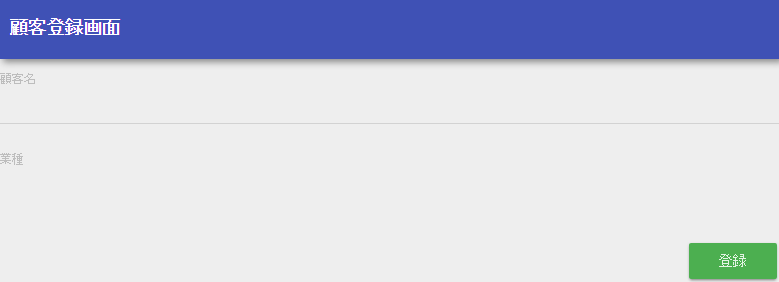
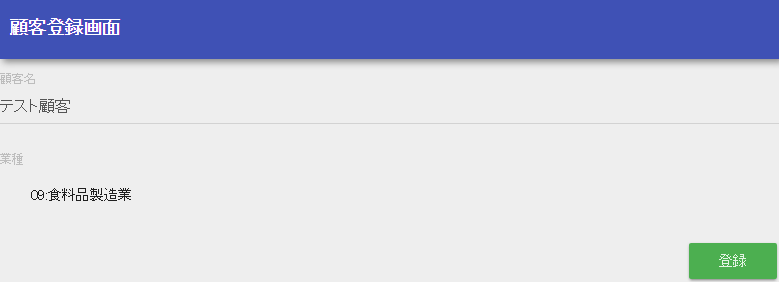
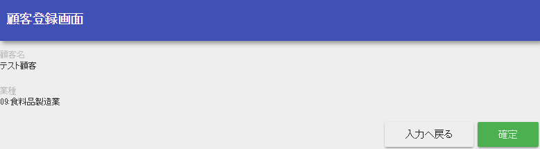
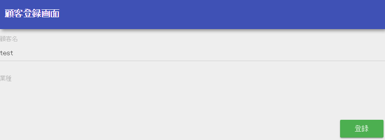
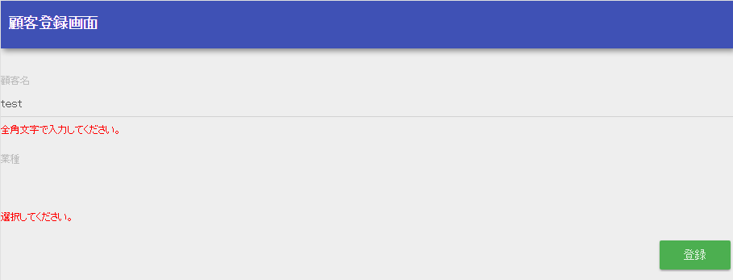

2.3.1.1.2. Confirmation of Registration Contents¶
This chapter describes the process for confirming the registered contents.
- Add input item to the registration screen
To transition to the registration confirmation screen, first add the following input items necessary for registering the client information to the registration screen.
- Create a form
Create a new ClientForm class to accept the values entered on the registration screen.
- ClientForm.java
package com.nablarch.example.app.web.form; public class ClientForm implements Serializable { // Client name private String clientName; // Industry type code private String industryCode; // Getter and setter are omitted }
- Key points of this implementation
- A setter and getter must be created in a form class.
- To implement validation ( described later ) using @InjectForm, the form implements the serializable interface.
- All properties that accept input values are declared as string type. For more information, see how to set validation rules.
- Modify JSP in the registration screen.
Add the following items to the JSP in the registration screen:
- Add the property name of the form that accepts the client name to the name attribute of text tag.
- Add the property name of the form that accepts the industry type code to the name attribute of select tag.
- Refer to Rules to access input/output data for the method to specify the name attribute of each tag.
- Add a CSS class when an input error occurs in text tag and select tag.
- Add the URI for transitioning to the registration confirmation screen, to the uri attribute of the registration button ( button tag ). Refer to URI specification method for the method to specify uri attribute.
- Add an error message display area in the event of an input error.
- /src/main/webapp/WEB-INF/view/client/create.jsp
<n:form> <div class="form-group label-static is-empty"> <label class="control-label">Client name</label> <!-- Client name text box --> <n:text name="form.clientName" cssClass="form-control input-text" errorCss="form-control input-error" /> <!-- Error message at the time of client name input error --> <n:error errorCss="message-error" name="form.clientName" /> </div> <div class="form-group label-static is-empty"> <label class="control-label">Industry type</label> <!-- Pull down of industry type --> <n:select listName="industries" elementValueProperty="industryCode" elementLabelProperty="industryName" name="form.industryCode" withNoneOption="true" cssClass="btn dropdown-toggle" errorCss="btn dropdown-toggle input-error" /> <!-- Error message when the input of the industry type is not correct --> <n:error errorCss="message-error" name="form.industryCode" /> </div> <div class="button-nav"> <!-- Registration button --> <n:button uri="/action/client/confirm" cssClass="btn btn-raised btn-success">Registration </n:button> </div> </n:form>
- Set the check rules for the input values
Use Bean Validation to set check rules for input values.
- ClientForm.java
@Required @Domain("clientName") private String clientName; @Required(message = "{nablarch.core.validation.ee.Required.select.message}") @Domain("industryCode") private String industryCode;
- messages.properties
#Other messages are omitted #Add the appropriate input required message for the pull down nablarch.core.validation.ee.Required.select.message=select.
- Key points of this implementation
- An annotation under nablarch.core.validation.ee is assigned to perform Bean Validation. (note that an annotation with the same name may exist under nablarch.core.validation.validator).
- Use domain validation to define validation rules for properties of the ClientForm class.
- To display the appropriate message for the target item, specify the message defined in the Required message attribute. For more information about message definitions, see Defining messages in property files.
- Create the confirm method and configure so that validation is performed
Create a method that is configured so that the input value is checked before execution.
- ClientAction.java
@InjectForm(form = ClientForm.class, prefix = "form") @OnError(type = ApplicationException.class, path = "forward://input") public HttpResponse confirm(HttpRequest request, ExecutionContext context) { // Get validated object ClientForm form = context.getRequestScopedVar("form"); // Implementation details are described later }
- Key points of this implementation
- Execute Bean Validation assigning InjectForm to the business action method.
- Configure the path attribute of OnError for internally forwarding to the input method when a validation error occurs (to refresh the registration screen, the industry type list must be configured).
- A validated object can be obtained from the request scope if a validation error does not occur.
- Implements the display process of the registration confirmation screen.
Saves the client information used in the subsequent registration process to Session Store and displays the registration confirmation screen.
- ClientAction.java
@InjectForm(form = ClientForm.class, prefix = "form") @OnError(type = ApplicationException.class, path = "forward://input") public HttpResponse confirm(HttpRequest request, ExecutionContext context) { ClientForm form = context.getRequestScopedVar("form"); Client client = BeanUtil.createAndCopy(Client.class, form); SessionUtil.put(context, "client", client); EntityList<Industry> industries = UniversalDao.findAll(Industry.class); context.setRequestScopedVar("industries", industries); return new HttpResponse("/WEB-INF/view/client/confirm.jsp"); }
- Key points of this implementation
- Similar to the process of displaying the registration screen, import the industry type information from the database and configure in the request scope.
- Use SessionUtil for saving to session store.
- Since the form is not stored in session store, use BeanUtil to convert the form to an entity, and then register in the session store.
- See Implementation Example with Registration Function for a detailed implementation when using session store.
- Create a JSP for the registration confirmation screen
Create a new JSP for the registration confirmation screen
- /src/main/webapp/WEB-INF/view/client/confirm.jsp
<%@ page language="java" contentType="text/html; charset=UTF-8" pageEncoding="UTF-8" %> <%@ taglib prefix="c" uri="http://java.sun.com/jsp/jstl/core" %> <%@ taglib prefix="n" uri="http://tis.co.jp/nablarch" %> <!-- Converts and displays the registration screen to a confirmation screen --> <n:confirmationPage path="./create.jsp" ></n:confirmationPage>
- Key points of this implementation
- By using the confirmationPage tag, the confirmation screen can be created by using the JSP of registration screen. For more information, see Common JSP for input screen and confirmation screen.
- Modify the registration screen
Modify the JSP on the registration screen so that the items displayed only on the registration screen and items displayed only on the confirmation screen can be distinguished.
- /src/main/webapp/WEB-INF/view/client/create.jsp
<div class="button-nav"> <!-- Registration button appears only on the registration screen --> <n:forInputPage> <n:button uri="/action/client/confirm" cssClass="btn btn-raised btn-success">Registration </n:button> </n:forInputPage> <!-- Return to input, confirm button is only shown on the confirmation screen --> <n:forConfirmationPage> <n:button uri="/action/client/back" cssClass="btn btn-raised btn-default">Return to input</n:button> <n:button uri="/action/client/create" cssClass="btn btn-raised btn-success">Confirm</n:button> </n:forConfirmationPage> </div>
- Key points of this implementation
- Items that are displayed only on the registration screen are described in the forInputPage tag.
- Items that are displayed only on the confirmation screen are described in the forConfirmationPage tag.
- Communication confirmation
- Confirm communications with the following procedure to ensure that the registration confirmation process is executed correctly.
- When validation error does not occur
- Displays the client registration screen(顧客登録画面).
- Select a full-width string for the client name(顧客名) and any value for the industry type(業種) and click the confirm(確認) button.
- Confirm that the registration confirmation screen(登録確認画面) is displayed, and the client name and industry type entered in 2 are displayed as labels.
- When a validation error occurs
- Displays the client registration screen(顧客登録画面).
- Select half-width string for the client name(顧客名), do not select the industry type(業種) and click the confirmation(確認) button.
- Confirm that the registration screen(登録画面) is displayed again, and an error message is displayed.
